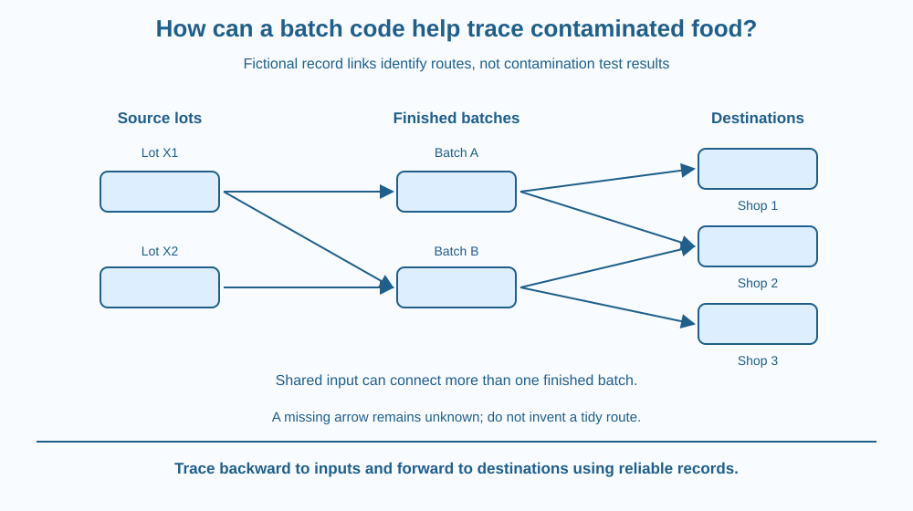

Explain how batch records connect a product to its source and distribution routes. Distinguish traceability from a contamination test. Use a fictional record network to identify which batches and destinations need investigation without claiming that every item with a shared code is definitely contaminated.
A problem is reported for one packaged-food batch. The products have already moved to several shops. How can investigators narrow the relevant route rather than treating every package in every shop as the same unknown object?
A batch code links a group of products to records about production and movement. The printed characters are useful because of those connected records, not because the code physically detects a harmful substance.
The important question is whether people can follow the chain backward to inputs and forward to destinations with enough detail to investigate the issue.
A batch is a defined group produced or handled under a specified grouping system. Its code can connect packages with production information, ingredients or source lots, processing records and distribution. The exact scheme varies by operation.
Traceability is the ability to follow relevant identities and movements through the chain. Backward tracing asks where inputs came from. Forward tracing asks where the resulting products went. Both need reliable connections between records.
Consider fictional batches B-A and B-B. B-A goes to shops One and Two, while B-B goes to Two and Three. A report concerning B-A points first to its recorded route, not automatically to every product at shop Three.
A shared supplier input can expand the question. If both finished batches used the same suspect source lot, investigating only the first printed finished-batch code could miss a relevant connection. The network must include inputs as well as final destinations.
The code is not itself proof of contamination. It identifies a group for assessment or action according to the responsible investigation. Testing, processing evidence and the actual cause matter. Likewise, absence of a code match is meaningful only if the records are complete and the code is interpreted correctly.
Record integrity is essential. Missing transfers, mixed batches or copied labels can break the chain. A perfectly readable package code cannot reconstruct a movement that was never recorded. Product identity and context may be needed because short codes can be reused in different systems.
A batch code is not necessarily a date label or a unique serial number for one individual item. These identifiers answer different questions. A useful record system states what its code refers to rather than relying on the observer to guess from the characters.
A recall or safety response is managed by the responsible organisation and authorities using current information. This lesson teaches the record logic through fictional examples. It does not diagnose a real product, issue an alert or instruct students to contact customers or consume a suspicious sample.
Draw source lots on the left, finished batches in the middle and destinations on the right. Connect them with arrows showing documented use and movement.
Highlight one finished batch and follow its arrows in both directions. Then highlight a shared source lot and see which additional batches become relevant to investigate. The difference shows why tracing can widen as new evidence arrives.
Put a question mark on a missing arrow. The gap is uncertainty, not permission to invent the missing destination. A trustworthy system preserves what is known and identifies what must be checked before drawing a more complete route.
The SVG shows fictional source lots linked to two finished batches and three shops. One batch is highlighted, and its forward destinations are marked separately from the other batch's route.
A shared-input arrow demonstrates why an investigation can expand. The caption states that highlighting indicates a record relationship, not a positive contamination test.
All identifiers are invented and do not refer to actual companies, shops or food alerts. The diagram concerns traceability logic rather than microbial disease mechanisms, package chemistry or mobile signal transmission.

Indian food packages can carry several kinds of information, including product identity, date information and production codes. Their roles should not be conflated. A code becomes useful when the producer's records explain the group and route it identifies.
School supply cupboards can use the same basic idea for non-food materials: record which labelled group arrived and where it was issued. That analogy teaches identity and movement without creating a real food-safety investigation.
For an actual product concern, students should inform a responsible adult and follow authoritative current instructions. A classroom network cannot certify that a package is safe or unsafe from a code alone.
Use paper and invented labels only. Do not inspect suspect food or send messages to shops.
Keep a missing connection marked unknown rather than filling it in for a tidy picture. The exercise models an investigation route. It does not establish contamination, a real recall boundary or permission to make public claims about a product.
Why can a correctly printed code fail to provide useful traceability if the transfer records are incomplete? Separate identifying a group from knowing its movements.
Now imagine two shops share one batch, while another shop has a different batch from the same supplier lot. What additional information would determine whether the investigation should expand? The answer depends on the cause and evidence, not simply the number of arrows.
What does forward batch tracing ask?
Answer: C — Forward tracing follows recorded destinations after production or handling.
Why can a shared source lot widen an investigation?
Answer: B — Different output batches may share a relevant input relationship.
A package matches a highlighted fictional batch. What does the code alone establish?
Answer: A — Traceability identifies connections, while contamination status requires additional evidence.
Create a fictional record sheet with batch identity, input lots, destinations and missing-information notes. Then write two conclusions: one directly supported by the arrows and one stronger claim the records alone cannot establish.
Your stronger claim should involve contamination status, making clear why traceability is not a laboratory test. Keep every company and code invented so the exercise cannot be mistaken for a real product warning.
A small printed code can be useful because it points to a much larger information network. The characters do not contain every fact directly. Their power depends on accurate links maintained elsewhere, showing why reliable records can matter as much as the visible label on an individual object.
Batch codes support backward and forward tracing through reliable records; they identify relationships for investigation rather than proving contamination by themselves.